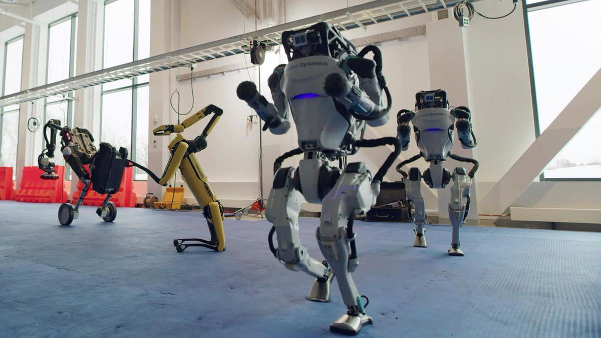

Inteligencia artificial, robots con aspecto humano. La realidad siempre supera a la ficción.
Gran parte de las acciones que antes estaban reservadas para los humanos, hoy las realizan robots, haciendo mas sencilla nuestra vida, aunque a veces da miedo pensar que hacen las cosas mejor que nosotros.
La compañía especializada en robótica Boston Dynamics ha mostrado a su robot bípedo Atlas realizando de manera autónoma ejercicios complejos de parkour, desde saltos hasta sortear obstáculos, siendo incluso capaz de hacer saltos mortales. En el siguiente video podemos ver al robot Atlas y Handle en plena acción.
A diferencia del resto de sus robots con dos o cuatro extremidades, Handle se destaca por traer un nuevo diseño de donde se destacan un par de ruedas en las patas, con las que es capaz de girar en su propio eje o de forma cerrada, bajar escaleras o colinas, incluso si éstas están nevadas. Pero lo más impresionante es su capacidad de equilibrio, ya que cuenta con su propio estabilizador que hace que cada rueda funcione de forma independiente sin importar las condiciones del terreno.
Caras de goma que se estiran en formas familiares, impulsadas por motores diminutos y una versión distante de la inteligencia artificial: ¿es este el futuro?
¿Os parece la imagen de este robot sacada de una película antigua de ciencia ficción? Si pasas el mouse por la imagen te darás cuenta de que nada más lejos de la realidad.
Te presentamos a Sophia, el robot social creado por David Hanson, ex ingeniero creativo de Disney. El robot, inspirado en parte en Audrey Hepburn y en parte en la mujer de Hanson, se construyó para imitar comportamientos sociales e inspirar sentimientos de amor y compasión en humanos.
Desde su revelación en 2016, la fama de Sophia se ha disparado. El robot ha concedido entrevistas en televisión, aparecido en la portada de la revista ELLE
Los creadores de Sophia afirman que su expresividad en sí misma representa un gran logro. Según una publicación sobre el software de Sophia, las redes neuronales profundas permiten al robot discernir las emociones de una persona a partir de su tono de voz y su expresión facial y reaccionar del mismo modo. Sophia también puede imitar las posturas de la gente y su código genera movimientos faciales realistas. Además, Hanson ha patentado la piel flexible de goma que cubre el rostro de Sophia.